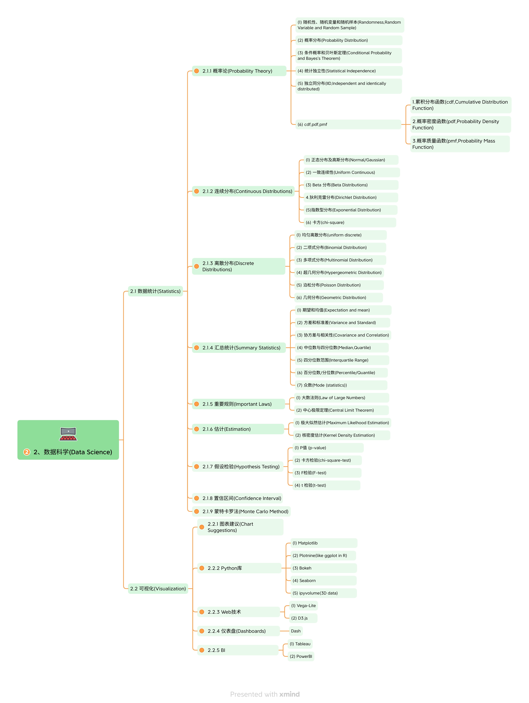

2.Data Science
Contents
2.Data Science#

2、数据科学(Data Science)#
2.1 数据统计(Statistics)#
2.1.1 概率论(Probability Theory)#
(1) 随机性、随机变量和随机样本(Randomness,Random Variable and Random Sample)#
(2) 概率分布(Probability Distribution)#
(3) 条件概率和贝叶斯定理(Conditional Probability and Bayes’s Theorem)#
(4) 统计独立性(Statistical Independence)#
(5) 独立同分布(IID,Independent and identically distributed)#
(6) cdf,pdf,pmf#
1.累积分布函数(cdf,Cumulative Distribution Function) 2.概率密度函数(pdf,Probability Density Function) 3.概率质量函数(pmf,Probability Mass Function)